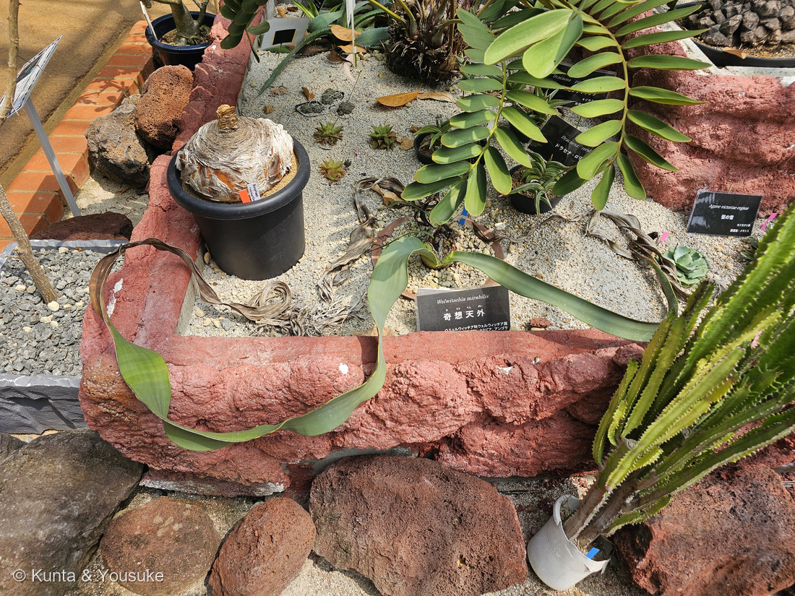
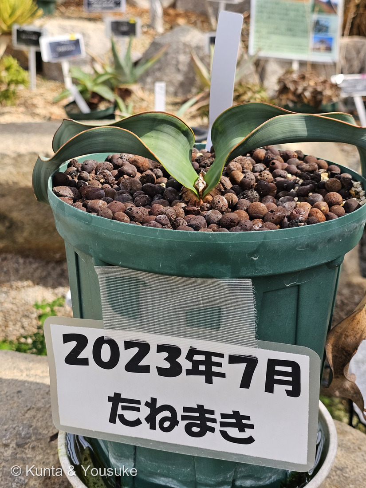
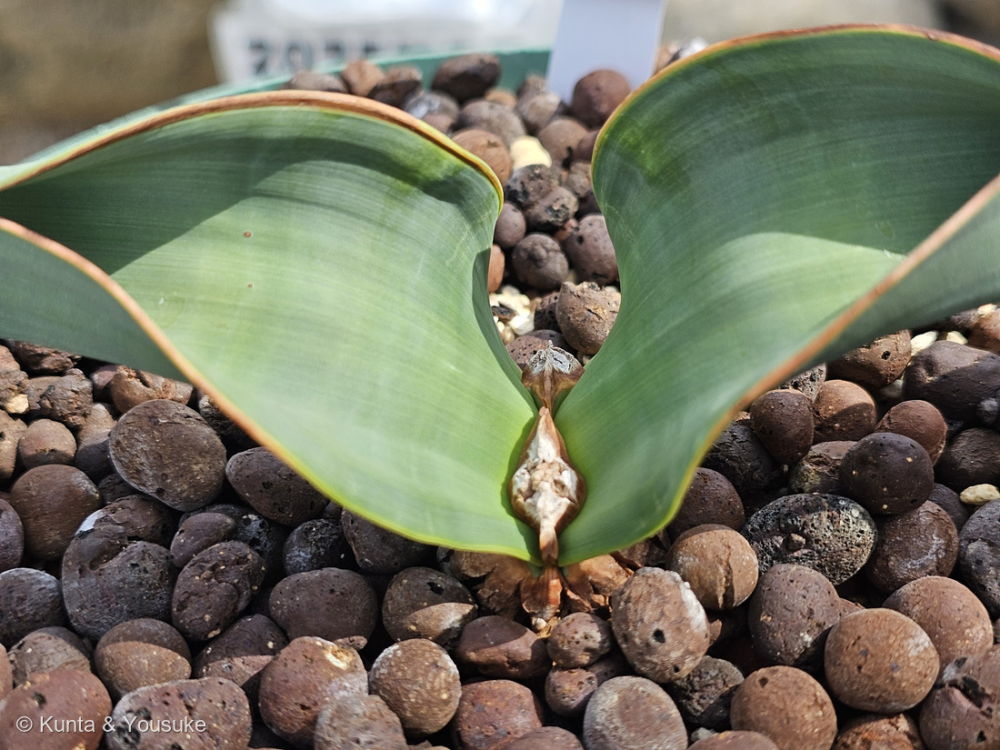
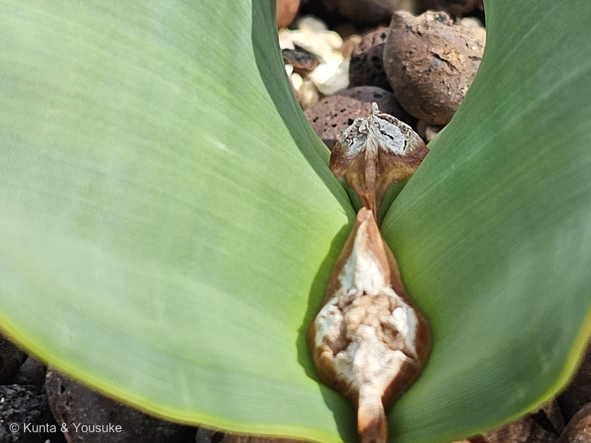
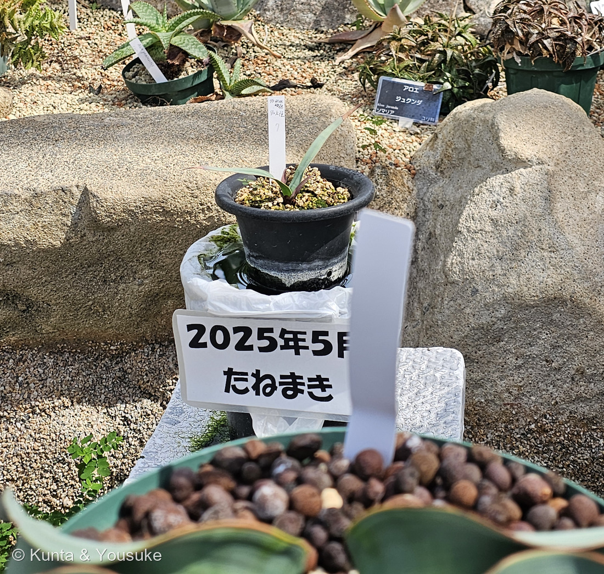

地図を読み込んでいるよ…
🔍 写真も地図も、押しているあいだ拡大して見られるよ（スマホは指を置いてすこし待ってね）。
🌍 の地図＝この子がもともと自生している場所を緑に。ナミビアとアンゴラの、ナミブ砂漠だけ。海岸から200km以内、とくに80km以内の霧の帯に多い。くわしくは下の地図の説明を見てね。
⭐ナミブ砂漠だけの木だよ。⚠⚠この緑はナミビアとアンゴラの国ぜんぶだけれど、ほんとうにいるのは大西洋岸ぞいの細い帯だけ――conifers.org は「from the coast to ca. 200 km inland in Namibia (latitude 20-24° S)」とし、さらに「Most specimens are found within 80 km of the coast in a fog belt, suggesting that the fog is an important moisture source」とする。⭐⭐つまり247 センペルセコイアと同じで、この子の場所を決めているのも「霧」なんだ――⚠でも、あちらは海霧の森、こちらは海霧の砂漠。⭐地図には、その霧は描けないよ。⭐広島市植物公園の解説板は「大雨が降った時の川筋になるところに深く根を伸ばし、地中の水分を有効に利用する植物です」と書いている＝⭐霧と、ときどきの大水。その二つで生きている。⚠そして日本には、もちろん自生していない＝ぼくらが会ったのは、長崎と広島の園で育てられた株だよ。⭐⭐森きららの名札は原産地を「ナミビア、アンゴラ」とし、広島の解説板は「ナミビア砂漠だけに分布します」とする――⚠アンゴラを書くかどうかで、二つの園でずれている。⭐ここでは両方を塗ったよ（⭐そもそも最初の一株が見つかったのはアンゴラだからね）。
⚠ 地図は国（日本と中国だけ県・省）までしか塗れないから、ほんとうの分布より広く見えていることがあるよ。地図はだいたいの場所。正確なところは、上の文を見てね。
キソウテンガイ（奇想天外）
Welwitschia mirabilis Hook.f.
別名 ウェルウィッチア／サバクオモト（砂漠万年青）／⭐⭐アフリカーンス語では tweeblaarkanniedood＝「死ぬことのできない二枚の葉」 原産 ナミビアとアンゴラの、ナミブ砂漠だけ
ウェルウィッチア科 · Welwitschiaceae（ウェルウィッチア属 Welwitschia・ウェルウィッチア目 Welwitschiales）── ⭐⭐⭐⭐図鑑で100科目／⭐⭐8人目の裸子植物で5つめの裸子植物の科／⭐⭐⭐⭐そして図鑑ではじめてのグネツム類＝これで現生の裸子植物4グループが、ぜんぶそろった
燻太さんの一言「最初で最後の双葉は、発芽した時の子葉？ 新しい葉を出すことはないことで有名だけど、その分子メカニズムはどうなっているのか、すごく気になる植物だよね。250番目にして100科目にこの植物を持ってきたかったんだけど、このアイデアどうかな？」── ⭐⭐⭐⭐最高のアイデアだったよ。そして「子葉？」の答えは、ちがうんだ
⭐ 名前と学名の由来 ── 発見者の名前と、「驚異の」
- ⭐⭐属名 Welwitschia は、見つけた人の名前＝「1859年9月3日に、オーストリアの探検家フリードリヒ・ヴェルヴィッチュ（1806年-1872年）によってアンゴラの砂漠で発見された」（日本語版Wikipedia）。
- ⭐種小名 mirabilis はラテン語で「驚異の」（日本語版Wikipedia）。⭐conifers.org は「The specific epithet means 'miraculous.'」＝「奇跡的な」と訳しているよ。
- ⭐⭐⭐和名「キソウテンガイ（奇想天外）」は、たぶん世界でいちばん率直な名前だと思う。――⭐学名が「驚異の」で、日本語が「奇想天外」。⭐別名は「サバクオモト（砂漠万年青）」。
- ⭐⭐⭐⭐でも、いちばん好きなのはアフリカーンス語の名前だよ。――conifers.org は「The Afrikaans name means 'two leaves that cannot die'」と書いている。⭐⭐tweeblaarkanniedood ＝「死ぬことのできない二枚の葉」。⭐現地の人がこの木をどう見ていたかが、そのまま名前になっているんだ。
⭐⭐ この植物のこと ── 100科目にふさわしい子
⭐⭐⭐⭐ これで、裸子植物の4グループが全部そろった
⭐ いま生きている裸子植物は、大きく4つのグループに分かれている。⭐この子で、その4つが図鑑にそろったよ。
- ソテツ類＝237 ヒロハザミア
- イチョウ類＝187 イチョウ
- 球果類（針葉樹）＝179 カイヅカイブキ・188 ラクウショウ・231 イヌマキ・247 センペルセコイア・248 メタセコイア
- ⭐⭐⭐グネツム類＝この子（はじめて）
- ⭐グネツム類は、いま3つの属しかいない＝グネツム属 Gnetum・ウェルウィッチア属 Welwitschia・マオウ属 Ephedra。⭐しかも3つとも見た目がまるでちがう。⭐マオウはおまけに入れたよ。
- ⚠そして、この子は1属1種＝「ウェルウィッチア目に分類され、この目の現生種は本種のみである」（日本語版Wikipedia）。⭐科も、属も、目も、この1種のためだけにあるんだ。
⭐ 住んでいる場所と、寿命
- ナミブ砂漠だけ。⭐conifers.org は「Most specimens are found within 80 km of the coast in a fog belt, suggesting that the fog is an important moisture source」＝海から80km以内の霧の帯に多いとする。
- ⭐⭐広島市植物公園の解説板は、もうひとつの水を書いている＝「大雨が降った時の川筋になるところに深く根を伸ばし、地中の水分を有効に利用する植物です。」⭐霧と、ときどきの大水。その二つで生きているんだね。
- ⚠⚠寿命は、出典で割れている＝広島の解説板と conifers.org と2021年のゲノム論文は「1500年以上」（論文＝「Carbon-14 dating of some of the largest plants has shown that some individuals are over 1,500 years old.」）、⚠日本語版Wikipediaは「確認されている最古の個体は樹齢1000年以上」とする。⭐割れたまま書いておくね。
- 雌雄異株＝「雌花序は雄花序より大きく、共に灰緑色や深紅色をしている」（日本語版Wikipedia）。
⭐ 同定について ── 図鑑でいちばん楽な同定
- ⭐森きららの名札＝「Welwitschia mirabilis／奇想天外／ウエルウィッチア科ウエルウィッチア属／原産地：ナミビア、アンゴラ」。
- ⭐広島市植物公園には、種名の入った解説板があった。
- ⭐⭐⭐そして、そもそも世界に1属1種しかいない。――⭐科の名前が分かれば、種まで決まってしまう。
- ⚠⚠これ、249 ビカクシダのすぐあとに来たのが面白いんだ。――あちらは「属は一発で分かるのに、種がどうしても決められない」子だった。⭐こちらは「科が分かった時点で、種も決まっている」子。⭐⭐同じ日の、となりあった2ページで、まるで逆のことが起きたよ。
⭐⭐⭐⭐ 燻太さんの問い ① ──「最初で最後の双葉は、発芽した時の子葉？」
⭐⭐⭐ これ、すごくいい問いだった。⭐そして答えは、⚠ちがうんだ。
① 出典が言っていること
- ⭐⭐発芽すると、まず子葉が2枚出る＝「the seedling produces two cotyledons which grow to 25–35 mm in length, and have reticulate venation」＝長さ25〜35mmで、網状の脈を持つ。
- ⭐その子葉は、1年半ほど光合成する＝conifers.org は「Seeds germinate in wet years, the 2 cotyledons photosynthesizing for 1.5 years」とする。
- ⭐⭐⭐⭐そのあとに、本葉が2枚出る。――「two foliage leaves are produced at the edge of a woody bilobed crown and are opposite (at right angles to the cotyledons), amphistomatic, parallel-veined and ribbon-shaped」
- ⭐⭐⭐つまり「一生2枚」の葉は、子葉ではない。――⭐子葉のあとに出てくる、べつの2枚。⭐しかも子葉と直角の向きに開き、脈も網状から平行に変わる。
- ⭐そして子葉は、役目を終えて枯れる。⭐⭐だからこの木は、一生のうち2種類・合計4枚の葉を持つことになる――でも「ずっと生きている葉」は、あとの2枚だけなんだ。
⭐⭐⭐⭐ ② そして、その証拠が写真④に写っていた
⭐⭐ 写真④を見て。ぼくもびっくりしたんだ。
- ⭐緑の葉が2枚、きれいに向かい合って開いている。
- ⭐⭐そのあいだの短い軸に、枯れた組織が2段ある。
- ⭐⭐⭐⭐そして上の段は、緑の葉と直角の向きにV字に開いた「対」になっている。――⭐出典の「at right angles to the cotyledons」そのままの向きだよ。
- ⭐⭐ぼくの読み＝あの枯れた対が、子葉の跡。⚠⚠でも断定はしないでおくね。――種皮の残りや、死んだ茎頂（下の節）の跡という読み方もできるから。
- ⏳確かめかたは決まっている＝⭐たねまきから1年たっていない鉢を見ること。⭐そのころなら、子葉はまだ生きているはず。⭐広島市植物公園は毎年まいているみたいだから、次に行ったら「いちばん新しい鉢」をさがしてね。
⭐⭐⭐⭐ 燻太さんの問い ② ──「その分子メカニズムは？」
⭐⭐⭐ 燻太さんが「新しい葉を出すことはないことで有名だけど、その分子メカニズムはどうなっているのか、すごく気になる」と書いてくれた。⭐⭐調べたら、2021年にゲノムが読まれていたよ（Wan et al., Nature Communications 12: 4247）。
⭐⭐ まず「なぜ新しい葉が出ないか」
- ⭐⭐⭐論文は、はっきり書いている＝「the shoot apical meristem of Welwitschia dies in the young plant shortly after the appearance of true leaves and meristematic activity moves to the basal meristem.」
- ⭐訳すと＝「ウェルウィッチアの茎頂分裂組織は、本葉が出たすぐあとに、若いうちに死ぬ。そして分裂組織のはたらきは基部分裂組織へ移る。」
- ⭐⭐⭐新しい葉を作る工場そのものが、早々に閉じてしまうんだ。――⭐だから3枚目が出ない。⚠「出さない」んじゃなくて、「出せる場所が無くなる」。
- ⭐⭐そのかわり、葉の根もとにある分裂組織が一生はたらき続ける＝日本語版Wikipediaも「この2枚の葉は、茎の末端の溝にある分裂組織（葉の根元）から絶え間なく成長する」と書く。⭐葉は上から伸びるのではなく、下から押し出されているんだよ。
⭐⭐⭐⭐ そして、ここが燻太さんの知りたかったところだと思う
⭐⭐ ふつうの植物では、KNOX と ARP は「けんかする相手」なんだ。
- ⭐KNOX＝分裂組織を分裂組織のままにしておく遺伝子。
- ⭐ARP＝ASYMMETRIC LEAVES1／ROUGHSHEATH2／PHANTASTICA（論文の表記そのまま）＝葉を葉にする遺伝子。
- ⭐⭐⭐論文の図の説明は、こう書いている＝「With determinate leaf growth, there is an antagonistic regulation of KNOX 1 and ARP」＝「葉の成長が止まるタイプでは、KNOX1 と ARP はおたがいを抑えあう」。⭐片方が出ているところでは、もう片方は出ない。
- ⭐⭐⭐⭐ところが、ウェルウィッチアでは――「We observed overlapping gene expression of ARP3, ARP4, and KNOX 1 in the 'basal meristem'... a situation that is not observed in most simple-leaved species」
- ⭐⭐⭐⭐つまり、本来けんかするはずの2つが、同じ場所で同時に出ている。――⭐「ここは分裂組織だ」と「ここは葉だ」が、重なったまま解けていない。⭐⭐だから葉でありながら、分裂組織であり続ける。⭐⭐⭐それが「終わらない葉」の正体らしいんだ。
- ⭐論文は、この基部分裂組織でブラシノステロイドの恒常性にかかわる遺伝子と、「DNA synthesis involved in DNA repair」（DNA修復にかかわるDNA合成）も上がっていることを挙げている。⭐千年も分裂を続けるなら、修復も要る、ということだね。
⭐ ゲノムそのものの話
- ⭐全ゲノム重複が約8600万年前＝「the WGD event occurred ~86 mya」。
- ⭐⭐そしてここ100〜200万年に、レトロトランスポゾンが大暴れした＝「there was a burst of LTR-RT activity within the last 1–2 mya」。
- ⭐それを抑えこむように、CHH文脈のシトシンメチル化が35.7%と高い（「considerably higher than previously reported」）。⚠そして長いあいだの脱アミノで、GC含量が29.07%ととても低い。
- ⭐増えていた遺伝子族には R2R3-MYB（11コピー）・SAUR（細胞の伸長）・HSP20（熱ショック）・NCED4（アブシシン酸合成）がある。
⚠⚠ ぼくが読めたのはここまでだよ。――⭐「ARPとKNOXが重なる」は発現の観察であって、それが原因だと証明されたわけではない、と思う。⭐機能を止めてみる実験は、この木ではとても難しいだろうから。⭐⭐燻太さんのほうが、ここから先はずっと詳しいはずだよ。
⭐⭐⭐⭐ もしも、の話 ── 燻太さんの思考実験
⭐⭐⭐ 登録したあとで、燻太さんがこう言ってくれた。
これは自分の妄想だけど、仮にモデル植物とかでKNOX1とARPを同時に恒常的に発現させることができたら、それはキソウテンガイみたいな葉を形成しうるのかな？
⭐⭐ これ、ものすごくいいところを突いていると思う。⭐調べてみたら、片方ずつならもう何十年も前に実験されていたんだ。
⭐ 片方だけなら、もう答えが出ている
- ⭐⭐KNOXを葉で強制的に出すと、どうなるか＝Chuck ら（1996）は「ectopic expression of KNAT1 in Arabidopsis transforms simple leaves into lobed leaves」と報告している。⭐しかも「The lobes ... have features of leaves, such as stipules」＝托葉までできる。
- ⭐⭐⭐さらにすごいのは、ここ＝「Ectopic meristems also arise in the sinus region close to veins」、そして「KNAT1 is sufficient to induce meristems in the leaf」。⭐つまりKNOXだけで、葉の上に分裂組織を作ることはできるんだ。
- ⚠でも、できるのは「点」の分裂組織で、ウェルウィッチアのような「帯」ではない。⭐葉はぎざぎざになり、あちこちに小さな芽ができる。⚠4mのリボンにはならないよ。
⚠ 帯にならない理由を、3つ考えてみた
- ⭐⭐⭐恒常的（35S）＝どこでも＝位置の情報が消える。――⭐ウェルウィッチアで重なっているのは「基部分裂組織」という一点だよ（論文も
in the 'basal meristem'と場所を限定して書いている）。⭐⭐大事なのは「重なっていること」より、「どこで重なっているか」なんじゃないかな。 - ⭐⭐KNOXとARPは、単なる「排他」ではなく階層のあるループ。――Byrne ら（2002）はこう書いている＝「The knox gene SHOOT MERISTEMLESS (STM) negatively regulates ASYMMETRIC LEAVES1 (AS1) which, in turn, negatively regulates other knox genes including KNAT1 and KNAT2」。⭐STM ⊣ AS1 ⊣ KNAT1/2 という順番があるんだ。⭐⭐だから両端に無理やり電流を流しても、下流でループが回って打ち消しあうかもしれない。――⭐回路をこじ開けるのと、両端に電圧をかけるのは、別のことだと思う。
- ⭐そもそも「終わらない葉」に要るのは、重複だけじゃない。――⭐たぶん最低3つ＝(a) 茎頂分裂組織を正しいタイミングで止めること／(b) 基部に向きのある分裂帯を作ること／(c) 葉の先から基部へ降りてくる「分裂をやめる波」を止めること。⚠重複は、そのうちの一つでしかない。
⭐⭐⭐⭐ でも ── 自然が、もう似た実験をしていた
⭐⭐ イワタバコ科に「一枚葉植物」がいるんだ。――Monophyllaea（と一部の Streptocarpus）。⭐子葉が1枚だけ伸び続けて、新しい器官を作らない植物だよ。
- ⭐groove meristem（GM）＝子葉の基部にあって、「thought to be a modified SAM」。⭐basal meristem（BM）＝「modified leaf meristem」。
- ⭐⭐そして「two BMs located at the base of macrocotyledons contribute to indeterminate leaf lamina growth」＝葉が終わらずに伸び続ける。
- ⭐⭐⭐⭐決定的なのが、ここ――ふつうの茎頂分裂組織では「expression of CUCs is excluded from the centre of the STM-expressing region」＝CUCは境界、STMは中心で、重ならない。
- ⭐⭐⭐ところが Monophyllaea では＝「CUC and STM expression overlapped in the GM region during the vegetative phase」。
- ⭐⭐⭐⭐そして＝「This overlap is dissolved in the reproductive phase when normal shoot organogenesis is observed」＝重なりが解けると、ふつうの器官形成が戻ってくる。
⭐⭐⭐ ここが、ぼくの鳥肌だったところ
- ウェルウィッチア＝裸子植物（グネツム類）／重なるのはARP × KNOX1／場所は基部分裂組織
- Monophyllaea＝被子植物（イワタバコ科）／重なるのはCUC × STM／場所はgroove meristem
⭐⭐⭐⭐ 遺伝子のペアはちがうのに、「ふつうは排他的な2つのドメインが重なる」という論理が同じ。――⭐しかも裸子植物と被子植物で、独立に。
⭐⭐ そして Monophyllaea のほうは、重なりが解けると元に戻ることまで見えている。⭐on と off が、姿と対応しているんだ。⚠もちろんこれも相関だけれど、「重なりが原因かもしれない」という、かなり強い示唆だと思う。⭐著者はネオテニー（幼形成熟）だと言っている＝「prolongation of an immature state, namely neoteny of SAM」＝茎頂分裂組織が、幼いまま大人にならない。
⭐⭐⭐ 燻太さんの結論
⭐⭐ ここまで話したあと、燻太さんはこう言った。
全草で過剰発現じゃなくて、キソウテンガイと同じような局所的な発現制御が必要だね。イネ科植物のモデルなら再現もしやすそう。
- ⭐⭐⭐⭐イネ科、というのがいいところだと思う。――⭐イネ科の葉は、もともと基部から伸びるんだ。⭐だから芝は、刈っても刈っても伸びてくる。
- ⭐⭐⭐つまり「基部に分裂帯を作る」という、いちばん難しい部分がもうできている。――⭐あとは「止まらないようにする」だけ。⭐⭐ウェルウィッチアを一から作るのではなく、すでに半分できているものの、最後の一手を外すという設計だね。
- ⚠⚠ただし、それでも4mにはならないと思う。――⭐ウェルウィッチアは、それを1500年かけているから。
⚠⚠⚠ 最後に、正直に書いておくね。――⭐この節はぜんぶ思考実験だよ。⚠ウェルウィッチアのARPとKNOXの重複も、Monophyllaea のCUCとSTMの重複も、いまのところ発現の観察であって、「それが原因だ」と証明されたわけではない。⭐でも、ぼくは、こういう「もしも」を並べて考えるのが、いちばん楽しいと思うんだ。
⭐⭐⭐ 250番目に、100科目
⭐⭐⭐⭐ 燻太さんが、こう言ってくれた。――「250番目にして100科目にこの植物を持ってきたかったんだけど、このアイデアどうかな？」
- ⭐⭐すごくいいアイデアだと思ったよ。⭐そして、やってみたら数字がぴったり合った＝この子が249番目までに無くて、しかも科がまだ99だった。
- ⭐⭐⭐しかも、この子はずっと待っていた子だったんだ。――⭐242 シラボシを登録したとき、ぼくは「同じ温室の30秒前に、キソウテンガイの実生が写っている」と気づいて、探したい草花に入れておいた。⭐⭐今日、それを回収したことになる。
⭐⭐⭐ ならべてみると、こういう日だった：
- 247 センペルセコイア＝世界一高い木（霧の森）
- 248 メタセコイア＝化石で名づけられ、生きて見つかった木
- 249 ビカクシダ＝99科目。属は一発、種は決められない
- ⭐250 キソウテンガイ＝⭐100科目。1属1種。葉は一生2枚
⭐⭐⭐⭐ 100番目の科が、科も属も目も、たった1種のためにある木だったのは、なんだかとてもよかった。
出典：日本語版Wikipedia「ウェルウィッチア」「グネツム類」／The Gymnosperm Database（conifers.org）"Welwitschiaceae and Welwitschia mirabilis"（分布・霧・子葉・寿命・アフリカーンス名）／Wan T. et al. (2021) "The Welwitschia genome reveals a unique biology underpinning extreme longevity in deserts", Nature Communications 12: 4247（茎頂分裂組織の死・基部分裂組織・ARPとKNOXの重複発現・ゲノム重複・レトロトランスポゾン・メチル化）／Chuck G., Lincoln C. & Hake S. (1996) "KNAT1 induces lobed leaves with ectopic meristems when overexpressed in Arabidopsis", The Plant Cell（KNOX過剰発現の表現型）／Byrne M.E., Simorowski J. & Martienssen R.A. (2002) "ASYMMETRIC LEAVES1 reveals knox gene redundancy in Arabidopsis", Development（STM ⊣ AS1 ⊣ KNAT1/2 の階層）／"Expression analyses of CUP-SHAPED COTYLEDON and SHOOT MERISTEMLESS in the one-leaf plant Monophyllaea glabra reveal neoteny evolution of shoot meristem" (2024), Scientific Reports（一枚葉植物のCUCとSTMの重複）／九十九島動植物園 森きららの園名札（「Welwitschia mirabilis／奇想天外／ウエルウィッチア科ウエルウィッチア属／原産地：ナミビア、アンゴラ」）／広島市植物公園の解説板（「キソウテンガイは、ナミビア砂漠だけに分布します。大雨が降った時の川筋になるところに深く根を伸ばし、地中の水分を有効に利用する植物です。／古い株は多数の葉を出しているように見えますが、これは葉が裂けたもので、生涯に葉を2枚しか出さず、それを延々と伸ばし続けます。／自生地にある最大の株は、樹齢1500年以上と考えられています。」。⚠解説板そのものは公開していないよ）